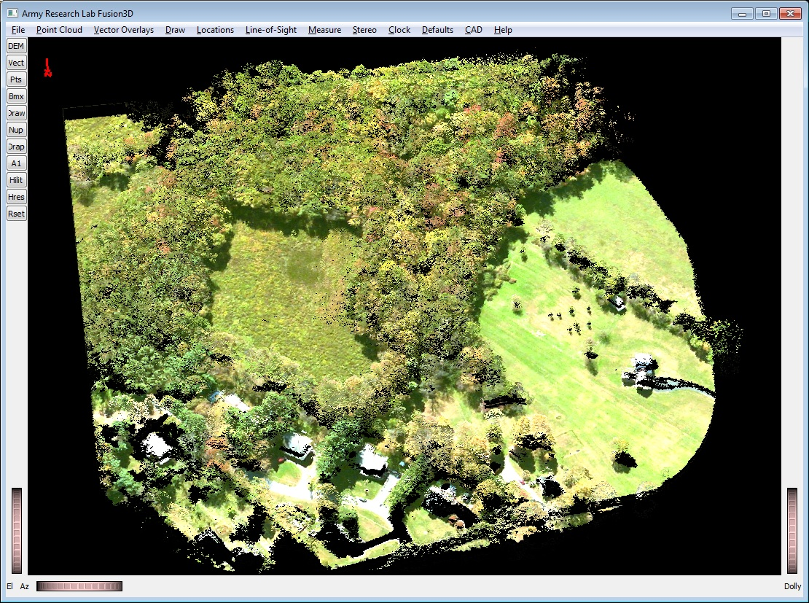

The Fusion3D viewer is capable of ingesting very large maps but we used only the A1 tile of the 4 available, and further cropped the point cloud to minimize the Fusion3D distribution download. We derived DSMs from the downloaded A1 point cloud using an Army Research Lab (ARL) developed gridding utility. This utility produces two DSMs: a last-hit (a2) DSM and a first-hit (a1) DSM Note that the Fusion3D viewer can display both DSM's simultaneously -- a feature that we think is unique among terrain viewers -- and that the a1-DSM can be toggled on or off with a viewer button.
The point cloud was cropped to the upper-left corner of the image to minimize size. It was also culled with another ARL utility to eliminate point-cloud points very near the last-hit DSM. This is not necessary for the viewer but was done to illustrate how the DSM and point cloud can be used together. It has 2 advantages: It reduces the cloud size (and total dataset size) by about half and it also reduces visual clutter.
The DSMs for the sample scene as rendered in the Fusion3D viewer are shown below.

Fusion3D/data/Scene/dem_0.5m_a2_scene.tif Primary last-hit DSM Fusion3D/data/Scene/dem_0.5m_a1_scene.tif Secondary first-hit DSM Fusion3D/data/Scene/mrg_0.5m_a1_scene.tif Color image used to texture the DSM (Colors derived from .las) Fusion3D/data/Scene/int_0.5m_a1_scene.tif Intensity image that could be used as texture when no color image Fusion3D/data/Scene/mrg_0.5m_a1_scene.kml Bounding box for the scene DSM Fusion3D/data/Scene/sampleTrack.kml Simple vector overlay example Fusion3D/data/Scene/scene_cull_crop.kml Bounding box for the scene point cloud Fusion3D/data/Scene/scene_cull_crop.las Point cloud culled and cropped (see above) Fusion3D/data/Scene/sampleProjFile.s4d Project file for the scene Fusion3D/data/Scene/scene.jpg Snapshot of scene rendered in the